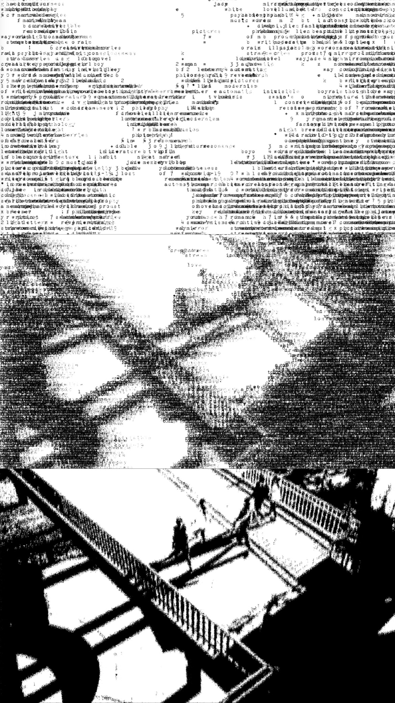

Image-Keyword Rasterizer
living is a process of writing...
method: each color pixel is quantized down to two color possibilities––either black or white,
each black pixel is then replaced with a word or a letter randomly chosen from a given array of keywords related to the photograph.